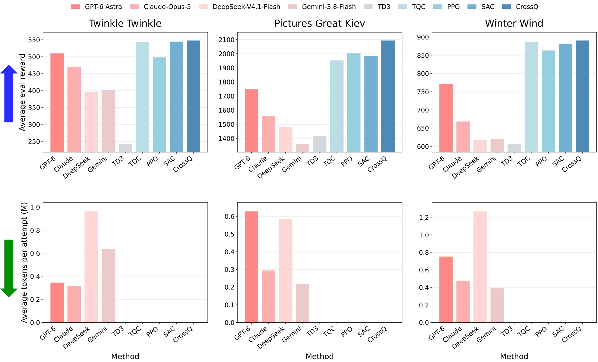
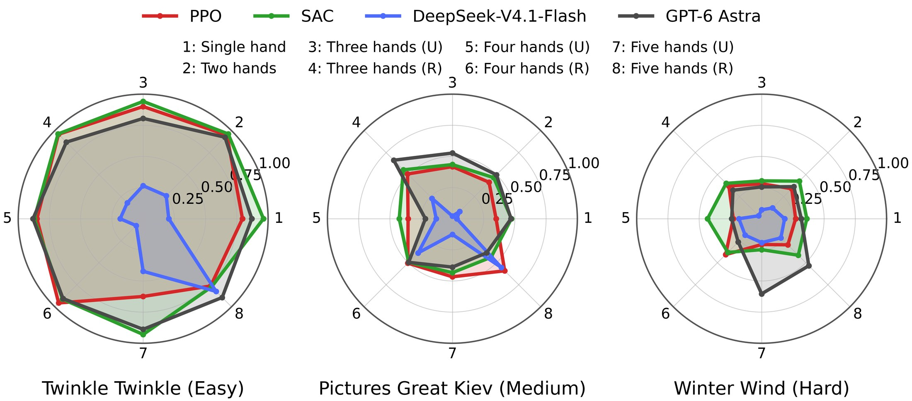
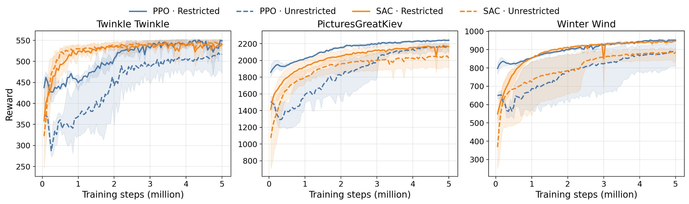

Standard RL
How well can a policy play, as repertoire and the number of hands grow?
Hand settings. Eight hand settings from one to five Shadow Hands. Unrestricted hands move freely across the keyboard; restricted hands are each confined to a fixed region, which keeps exploration and credit assignment tractable as the number of hands grows.
Reward. Following RoboPianist, rt = rtkey + rtmatch − λenergy rtenergy, rewarding correct key presses, fingertip-to-key proximity, and low actuation. Two variants: a fingering-annotated reward, and an optimal-transport reward that needs no fingering annotations and so supports arbitrary MIDI files and hand configurations.
Baselines. PPO, SAC, CrossQ, TD3, TQC, and four LLM-based agents that optimize keyframes over ten iterations.
Results
Two-hand evaluation
RL & LLM leaderboard
Click a metric to sort
| Rank | Method | |||
|---|---|---|---|---|
| 1 | CrossQ | RL | 1,172.3 | — |
| 2 | TQC | RL | 1,127.7 | — |
| 3 | SAC | RL | 1,136.5 | — |
| 4 | GPT-6 Astra | LLM | 1,009.1 | 582.3K |
| 5 | PPO | RL | 1,121.2 | — |
| 6 | Claude Opus 5 | LLM | 899.1 | 362.8K |
| 7 | Gemini 3.8 Flash | LLM | 794.3 | 416.8K |
| 8 | DeepSeek V4.1 Flash | LLM | 831.8 | 938.2K |
| 9 | TD3 | RL | 756.2 | — |
| TQC | RL | 543.9 | — | |
| PPO | RL | 497.8 | — | |
| SAC | RL | 544.6 | — | |
| GPT-6 Astra | LLM | 509.8 | 344.5K | |
| Claude Opus 5 | LLM | 469.3 | 313.2K | |
| CrossQ | RL | 547.6 | — | |
| DeepSeek V4.1 Flash | LLM | 395.1 | 962.2K | |
| Gemini 3.8 Flash | LLM | 401.0 | 637.8K | |
| TD3 | RL | 242.6 | — | |
| CrossQ | RL | 2,092.8 | — | |
| GPT-6 Astra | LLM | 1,747.2 | 627.8K | |
| SAC | RL | 1,983.9 | — | |
| TQC | RL | 1,952.2 | — | |
| PPO | RL | 2,002.5 | — | |
| Claude Opus 5 | LLM | 1,559.9 | 293.6K | |
| Gemini 3.8 Flash | LLM | 1,361.0 | 218.9K | |
| DeepSeek V4.1 Flash | LLM | 1,483.7 | 585.3K | |
| TD3 | RL | 1,419.3 | — | |
| CrossQ | RL | 876.6 | — | |
| TQC | RL | 886.9 | — | |
| SAC | RL | 881.0 | — | |
| GPT-6 Astra | LLM | 770.4 | 750.9K | |
| PPO | RL | 863.2 | — | |
| DeepSeek V4.1 Flash | LLM | 616.7 | 1,267.1K | |
| Gemini 3.8 Flash | LLM | 620.8 | 393.8K | |
| Claude Opus 5 | LLM | 668.1 | 476.6K | |
| TD3 | RL | 606.8 | — |
Select RL, LLM, or both to show results.
Evaluation budget. LLM agents are evaluated over 10 keyframe-optimization attempts, while RL methods are trained for 5M environment steps. Token counts apply only to LLM methods. GPT-6 Astra and Claude Opus 5 each lack one recorded Twinkle attempt; their token averages use the nine available attempts for that song.


Takeaway. More hands do not consistently improve F1. RL methods improve more stably, while LLM-based agents can achieve rapid F1 gains within a few attempts at substantial token cost; GPT-6 Astra shows the strongest iterative in-context learning. Restricted hand assignments converge faster and reach higher final returns than unrestricted ones.
More results: restricted vs. unrestricted hands
